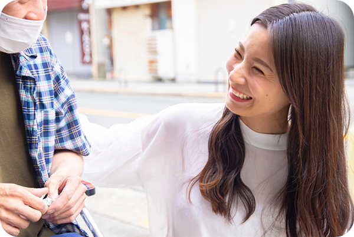

住まい・仕事・日常生活の困りごとを一つの窓口でご相談いただけます。グループ内連携で、住まい探しから就労まで切れ目なくサポートします。
住宅確保要配慮者の入居支援、障がい者の地域移行支援など、行政・医療・不動産との連携実績があります。地域の社会資源としてご活用ください。
グループホーム開設・福祉事業の立ち上げを、実際の運営経験に基づきコンサルティングしています。制度・人材・集客まで具体的にお伝えします。
障がいのあるお子さんを持つ親御様から「できるなら、自分が死ぬときにはこの子もつれていきたい」という言葉を聞いたことが、最初のグループホーム開設のきっかけでした。
運営する中で「住む場所が見つからない」「働きたいけど居場所がない」「家事ができなくなってきた」「支える人手が足りない」という声に次々と出会いました。その都度、必要な事業を立ち上げてきた結果が、現在の6事業です。

住まいの相談で来た方に就労支援を案内する、入居者に家事代行をつなぐなど、事業間で情報を共有し必要な支援に最短でつなぎます。
地域の不動産会社、行政、医療機関、ケアマネジャーとの連携体制があります。「顔が見える距離」で支援するからこそ、素早い対応が可能です。
相生株式会社が運営する6つの事業です。カードをクリックすると詳細が開きます。
障がいのある方が地域のなかで共同生活を送るためのホームを運営。食事・入浴・健康管理など日常生活全般をサポートします。
高齢・障がい・低所得等で部屋を借りにくい方の物件探しから入居後の見守りまで、不動産と福祉の両面からサポートします。
一人ひとりのペースに合わせた軽作業・就労訓練。自立訓練プログラム併設で、週1日・短時間からスタートできます。
室内清掃・庭園管理・片付けサポートなど、高齢者対応に慣れたスタッフが伺います。料金は事前提示、追加請求なし。
移動支援の専門資格取得に対応した養成講座。現場経験豊富な講師陣による実践指導で、修了後の就業相談にも対応。
グループホーム等の開設支援に加え、介護・福祉業界に特化した専門人材の採用コンサルティングも行っています。
忘れられない言葉があります。障がいのあるお子さんを持つ親御様が、静かにこうおっしゃいました。「できるなら、自分が死ぬときにはこの子もつれていきたい」——冗談でも比喩でもない、本気の言葉でした。この子が一人になったとき、誰が隣にいてくれるのか。その問いに、私は言葉で返せなかった。だから、まずグループホームをつくりました。
一つ事業を始めると、次の「困った」が見えてきます。住む場所が見つからない方がいて居住支援を始めました。働きたいけど居場所がない方がいて就労支援の事業所を開きました。家のことが自分でできなくなってきた方がいて家事代行を立ち上げました。支える人手が足りなくて人材育成の講座をつくりました。計画的に広げたというより、目の前の人を放っておけなかった。それが正直なところです。
「相生」という名前には「ともに生きる」という意味を込めています。大きな会社ではありません。できることにも限りがあります。それでも、大阪の住吉区というこの場所で、障がいのある方とそのご家族、高齢の方、住まいに困っている方の隣に立ち続けたい。「あなたがいてくれてよかった」と言ってもらえる存在であり続けることが、私たちの目標です。
相生株式会社代表 向井 玄人
相生株式会社では、福祉の仕事に関心のある方を募集しています。資格・経験は不問です。
入社後の研修とOJTで一から学べます。グループ内にガイドヘルパー養成講座があり、働きながらの資格取得も支援しています。
困ったことがあればすぐに相談できる距離感です。一人で抱え込まない風土を大切にしています。
適性や希望に応じてグループ内の他事業への異動・挑戦も可能です。
サービスのご利用、採用に関するご質問、事業のご相談など、お気軽にお問い合わせください。